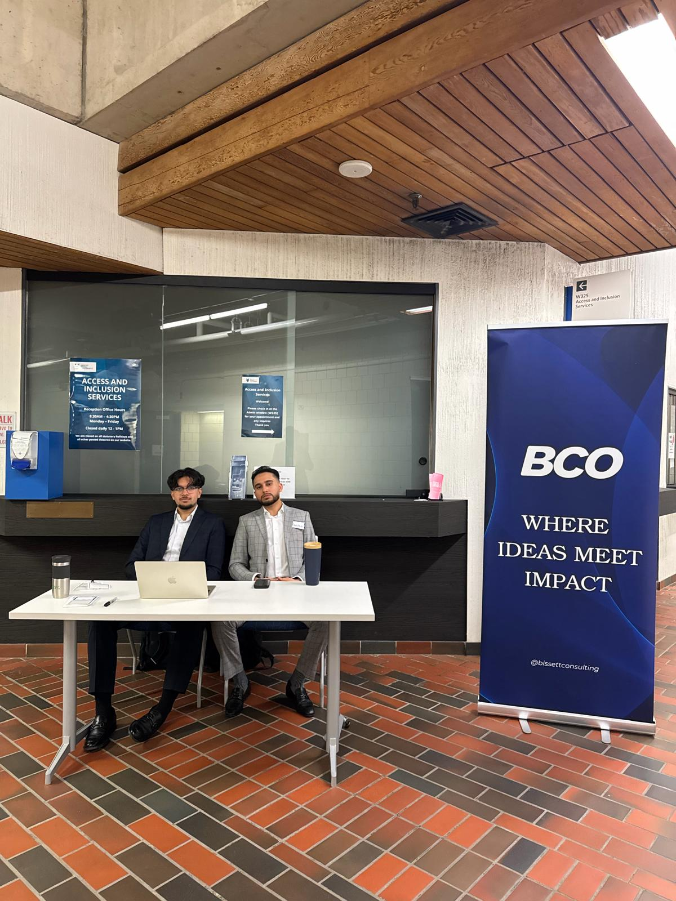
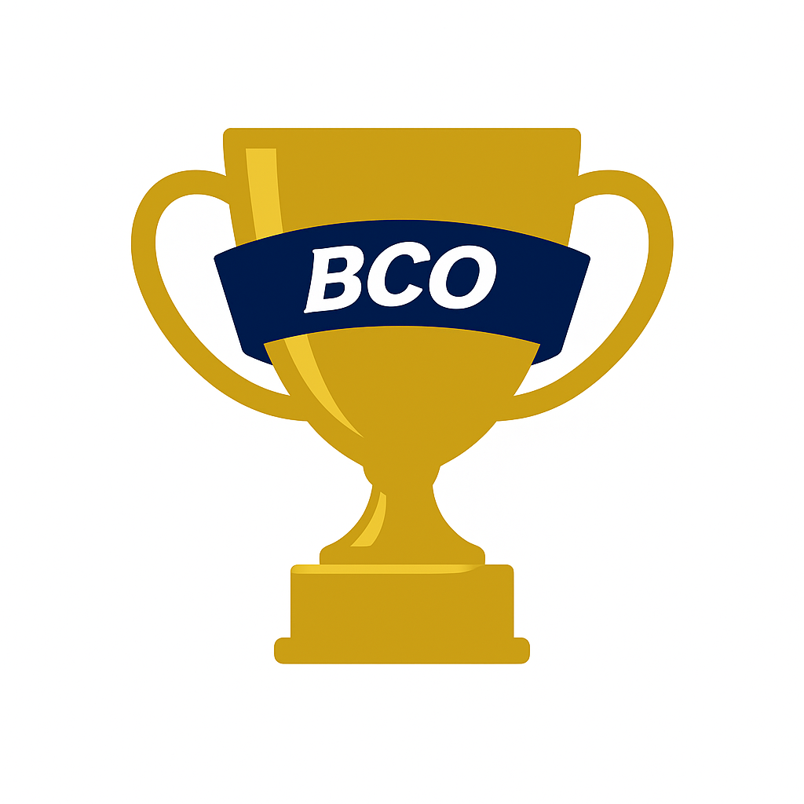

Corporate Strategy Summit
Corporate Strategy Summit is the inaugural event hosted by the Bissett Consulting Organization, created to introduce students to the world
of consulting and corporate strategy. Through industry speakers and real-world insights, attendees gain exposure to how strategic decisions
are made while developing problem-solving skills and professional connections. The summit is designed for students eager to explore
consulting, build a strategic mindset, and learn directly from industry professionals.

Case Workshops
Case Workshops are interactive training sessions hosted by the Bissett Consulting Organization, designed to help students build confidence in consulting-style problem solving.
Participants learn how to break down business cases, apply common consulting frameworks, and communicate structured recommendations. These workshops are hands-on and
beginner-friendly, making them ideal for students preparing for case competitions, consulting interviews, or simply looking to develop stronger analytical and presentation skills.

BCO Consulting Cup
BCO Consulting Cup is a student-run case competition organized by the Bissett Consulting Organization, designed to give participants hands-on
experience solving real consulting-style business problems. Teams work under time constraints to analyze a case, develop strategic
recommendations, and present their solutions to judges. The competition focuses on structured thinking, teamwork, and clear communication, offering
students a practical introduction to consulting frameworks and case interviews. The BCO Consulting Cup is open to students of all backgrounds who want
to challenge themselves and build real-world problem-solving skills.